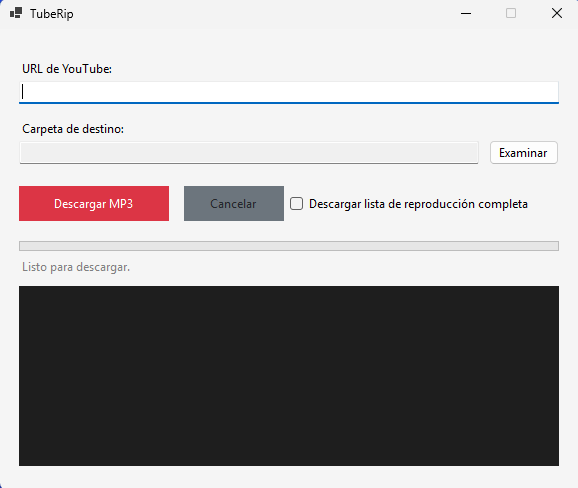

Descarga audio de YouTube de forma rápida, sencilla y sin complicaciones.
Descargar para Windows
Convierte videos a audio utilizando la mejor calidad disponible.
Descarga listas completas con un solo clic.
No requiere instalación. Descarga y ejecuta.
Construido sobre yt-dlp y FFmpeg para máxima compatibilidad.